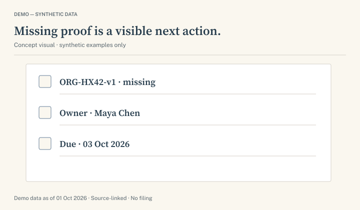

Origin proof missing
DEMO — SYNTHETIC DATA · Hover or use the reveal control.
Record
HX-42
Stainless fastener assembly
Harborside Works
The required status stays visible above.
Liberty Atlas / Docket Fold
A complete visual language for SKUDocket: editorial warmth, precise product evidence and a recognizably American commerce atmosphere.
Design system and component preview. Product examples use synthetic data.
 Original atmospheric illustration · Not an operational route map
Original atmospheric illustration · Not an operational route map01 / Identity
Docket Fold carries the selected bold D silhouette and corner fold into editable SVG geometry. The serif wordmark is outlined, so the brand signature renders without a font dependency.

02 / Color
Ink gives the system authority; cream gives it warmth. Muted coral is the brand accent. A darker coral derivative makes white CTA lettering readable. Holds and review states have their own labeled semantic colors.
03 / Typography
Source Serif 4 carries headlines, display moments and document titles. Public Sans carries body text, navigation, controls and data. Use tabular numerals for quantities, dates and cost comparisons.
Reading measure / 64ch maximum
Prepare repeat-SKU import dossiers for broker review. Compare the assumptions behind a proposal, inspect the source evidence and keep unresolved questions visible. A review packet preserves the reasoning; it does not determine a classification or file an entry.
Italic provides editorial emphasis. It should not become an entire interface style.
Bold identifies a decision or a useful label. Capitalized tracking belongs in short eyebrows, not body copy.
04 / Layout
Build on a 4px spacing rhythm. Marketing pages use a 12-column desktop grid; tablet uses 8 and mobile uses 4. Keep product evidence readable rather than shrinking an entire dashboard to fit a decorative card.
| Viewport | Columns | Page margin | Grid gap | Section spacing |
|---|---|---|---|---|
| 1440px | 12 | 80px | 32px | 96px |
| 1024px | 12 / simplified composition | 40px | 24px | 80px |
| 768px | 8 | 24px | 24px | 64px |
| 390px | 4 | 20px | 16px | 48px |
| 360px | 4 | 16px | 16px | 48px |
Border only / default data panel
Quiet separation / hover emphasis
Hero dossier / temporary context
Controls: 4px radius. Cards: 8px. Tables and document rules: square. A pill is reserved for a compact status, not every UI object.
05 / Buttons and CTAs
Use one primary action per decision area. Shutter motion fills the surface while the label stays readable. Flip-label motion preserves the accessible name. The icon follows the action rather than decorating every label.
| State | Rule |
|---|---|
| Default / hover | 48px high, 20px inline padding, 14–15px semibold. Hover darkens coral and advances the arrow 4px. |
| Focus / pressed | 2px visible focus ring with 4px offset. Press moves at most 1px. No layout shift. |
| Loading / disabled | Preserve label and width; expose busy/disabled state. Never use loading as evidence of a sent request. |
| Flip / shutter | 280ms label flip or surface shutter. Touch and keyboard actions work without hover. Reduced motion removes translation. |
| Primary CTA | Explore the demo; Discuss a pilot. No “Start free” or payment button for hypothetical offers. |
| Contextual CTA | Compare rationales; Review blockers; View source; Preview packet; Return for revision. |
06 / Cards and independent visuals
Every offer uses a different product visual. Hover adds a controlled edge and elevation. A document flip reveals optional source context; the status and action remain visible outside the moving face.
DEMO — SYNTHETIC DATA · Hover or use the reveal control.
Record
Stainless fastener assembly
Harborside Works
The required status stays visible above.
Shutter resource card
Four quiet shutters retreat to expose the paper surface. The diagram, title and CTA remain readable in every state.
View the evidence figure
07 / Figures, charts and illustration
Evidence comparisons, provenance, review steps and conditional costs use precise SVG figures. Atmospheric illustration adds context around them. Pie and donut charts show only defined parts of the ten-record synthetic queue.
| State | Records | Share |
|---|
| Component | Scenario A | Scenario B |
|---|---|---|
| Goods | $12,000 | $12,000 |
| Illustrative duty | $480 / 4% | $720 / 6% |
| Freight / insurance / broker fee | $600 / $80 / $150 | $600 / $80 / $150 |
| Included subtotal | $13,310 | $13,550 |
| Per unit | $13.31 | $13.55 |
Use bars for comparisons, lines for dated fixtures, and a waterfall for cost components. Direct labels, text summaries and a data table accompany charts. Avoid 3D pies, unlabeled arcs, fake live feeds and ambiguous savings graphics.
08 / Dashboard patterns
Six different layouts share the same fictional importer, SKU and evidence states. The queue establishes context; each workbench exposes the decision, source, reviewer and next action.
09 / Page-by-page visual architecture
31 route recipes keep the IA complete. Hero compositions, evidence objects and supporting figures change with the buyer’s task. Legal, forms and access pages use compact openings; product pages earn their larger visuals.
10 / Icon system
59 licensed Lucide SVGs support navigation, dossier work, evidence, charts, status and review. Use 20px as the default, 1.75px stroke and visible text for important status. Social trademarks retain their original assets and colors.
11 / Forms and supporting states
Visible labels, clear help, useful errors and separate unchecked consent. This form is a component specimen; previewing it never stores or transmits information.
Success describes a saved request or completed review only when evidence confirms it. It never means “compliant” by itself.
No source documents in this view. Explain accepted input and offer a specific next action; do not render a fake chart.
Show last known source date, explain coverage and preserve a review task. Do not silently substitute a “live” status.
Use still diagrams, immediate state swaps and stacked hypothesis panels. Preserve source dates, status labels and keyboard focus.
No customer accounts are active. Offer the synthetic workspace or a pilot inquiry; do not collect a real password in a concept preview.
12 / Production handoff
The kit contains assets and reusable examples for the website build. The 31 route recipes are design specifications; they are not deployed company pages or an operating compliance product.
Use the harbor for place and the worktable for human review. Place precise SVG evidence over clean surfaces. Keep textures outside working UI; no third-party logos, tourism collages or decorative fake metrics.
Connect node edges, preserve labels and show direction. Highlight the selected evidence path. Keep missing evidence and reviewer decisions explicit. A dossier export ends before external execution.
120ms micro feedback; 180ms controls; 280ms shutters; 360ms optional flips; 480ms chapter reveal. No scroll-triggered approval, automatic screening resolution or navigation-blocking intro.